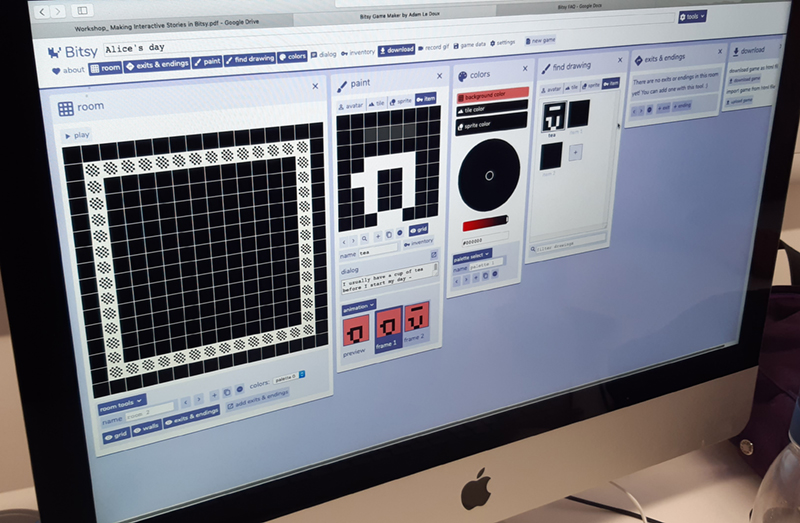
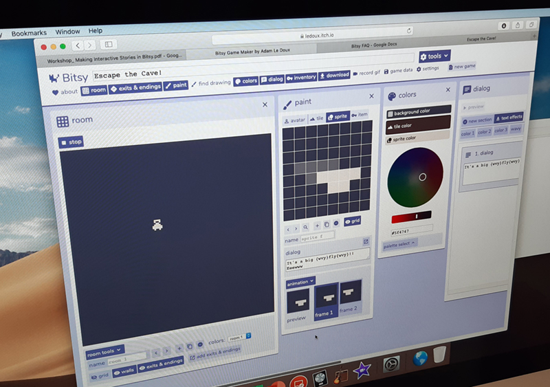
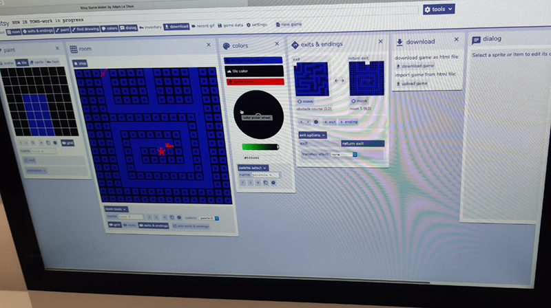
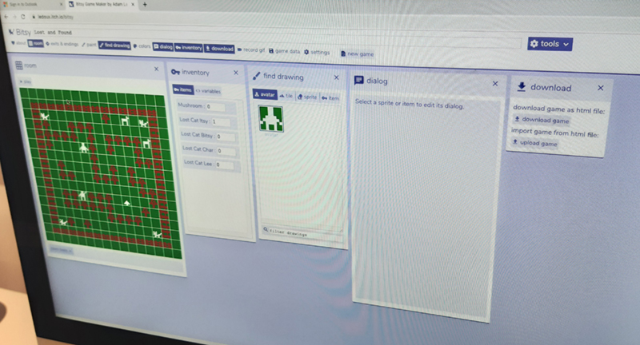
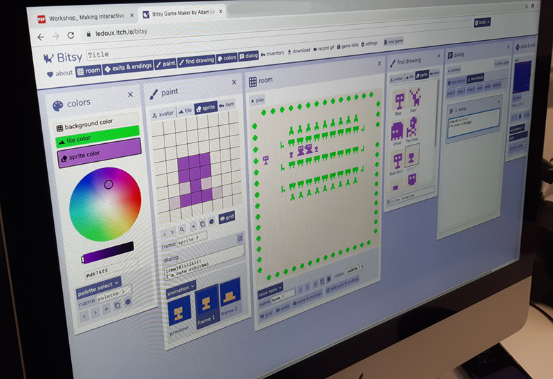

I ran a short workshop at Bath University, which was open to students from all academic backgrounds. During the workshop I introduced the concept of Small Tools in game development and how they can be a great creative space, and also a useful stepping stone for people wanting to get into game development. I used the workshop document that I created with Mark Wonnacott when we ran our first Bitsy workshop.
Here are some photos of the games that the students created over the 2-hour workshop.




